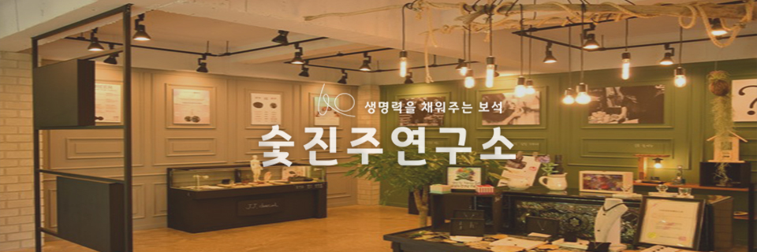
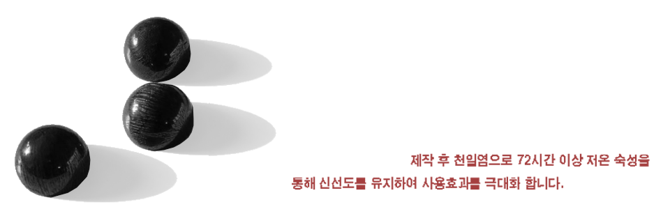
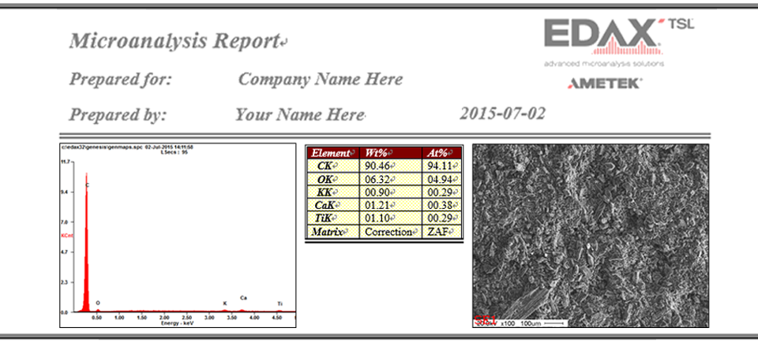
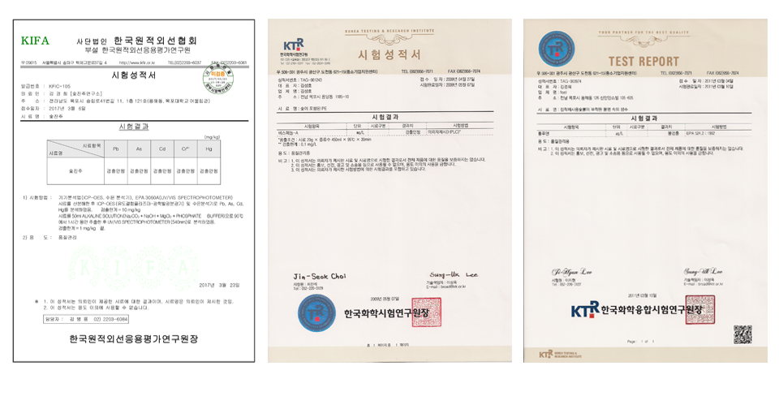
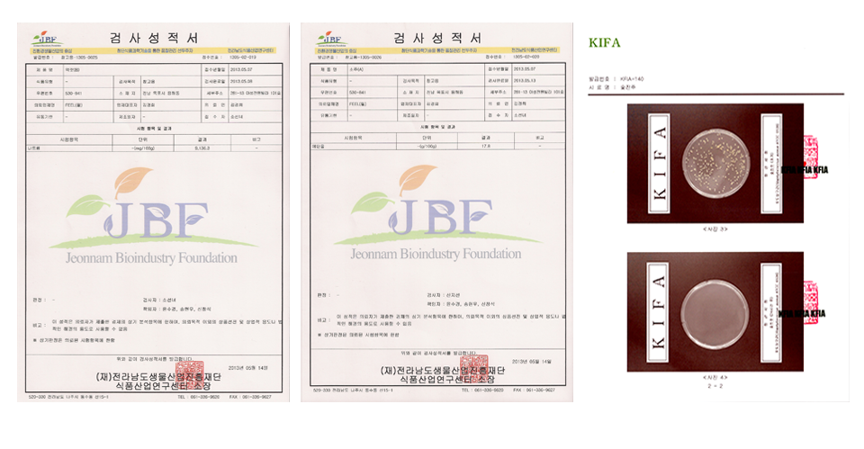
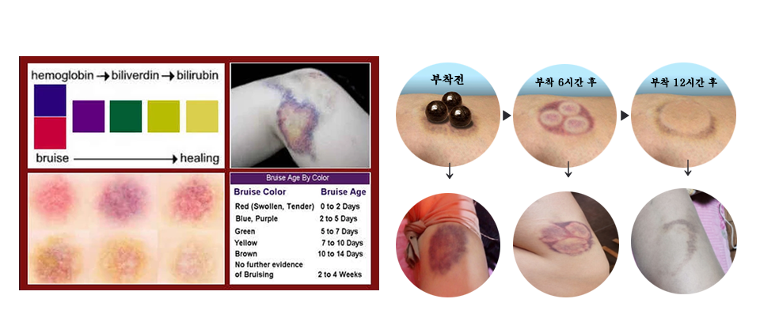
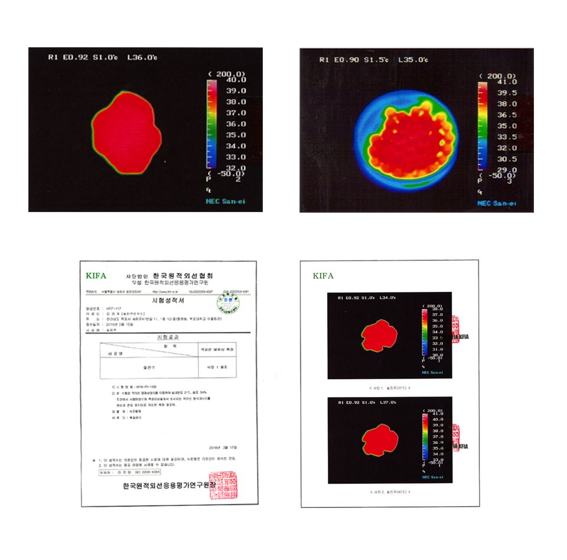
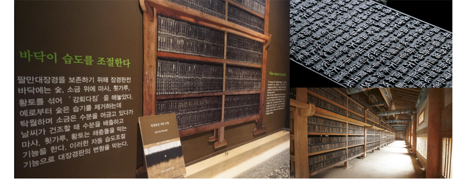
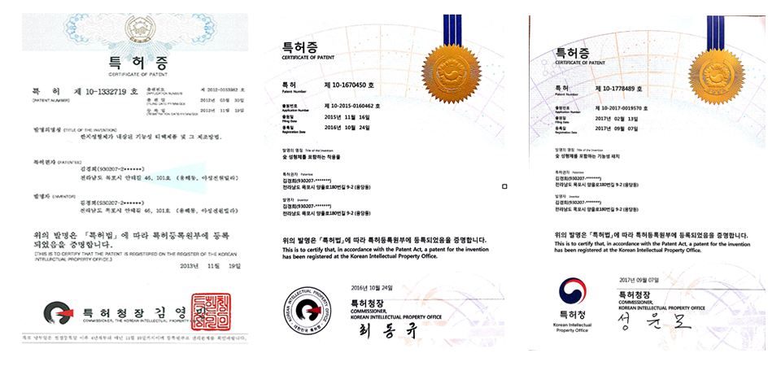
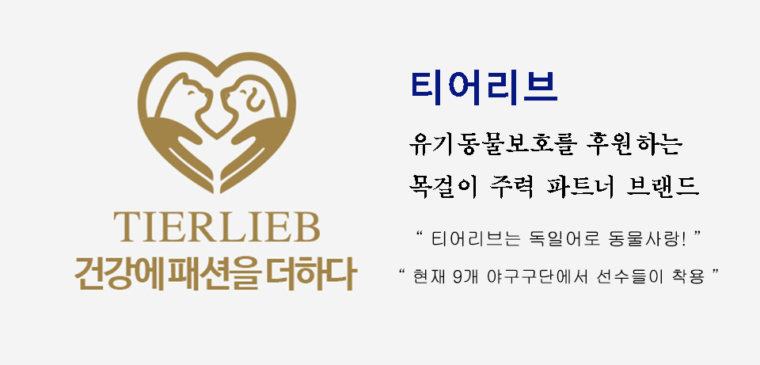

회사소개

공기정화와 탈취효과 등 숯이 좋은건 누구나 알고 있지만 가루가 빠져나오고, 손에 묻어나오는 숯의 문제점을 해결하고 싶었습니다.
플라스틱 숯으로 시작하여 시행착오를 거치며 사용이 편리한 숯에 대해서 연구합니다.
사람은 숯으로 어디까지 도움을 받을 수 있는지, 연구를 통해서 개발합니다.
플라스틱 숯 / 가루가 빠져나오지 않는숯 / 진주처럼 반짝이는 숯 / 안심하고 먹을 수 있는숯 /
사람에게 필요한 숯을 연구합니다.
숯진주 연구소는 가장 가까운 사람들의 불편함을 해결하며 끊임 없이 연구합니다.
정직과 절제의 가치로 경험을 통해서 개발합니다.
CEO 인사말
안녕하세요. 저는 초등학교 3학년 때부터 발명일지를 작성하면서 발명가의 꿈을 꾸었던 현 발명창업 숯진주연구소 대표 김경희입니다.
어릴적 약 100여건 이상의 특허 경험을 통해서 여러 발명품 중 2006년 숯이 술 속에 유해성분을 흡착하여 숙취해소에 도움을 줄 수 있다는 시험을 통해 플라스틱 숯을 개발하여 전국 학생과학 발명품 경진대회에서 우수한 성적으로 교육부 장관상을 받게 되었습니다.
그 후 저는 숯이라면 사람의 건강에 도움을 줄 수 있는 최고의 아이템, 발명품이 될 수 있겠다! 생각을 한 후, 숯의 매력에 매료되었습니다.
플라스틱 숯은 어떻게 되었는지 궁금하시죠? 액체에 오래 침지 되어 있으면 숯과 플라스틱이 분해가 되는 과정을 보며 더 단단하고, 가루가 빠져나오지 않는 숯을 개발하자! 생각을 하며 지금의 숯진주라는 아이템을 고안하게 되었습니다.
숯진주는 단순 발명품을 뛰어넘어 부모님의 건강에 도움을 주었고, 저의 가장 큰 고통인 숙취와 멀미를 해결해주었습니다. 저는 정직과 절제의 가치를 통해 경험을 통해 발명을 하는 발명가입니다.

우수아이디어확인서1
우수아이디어확인서2
우수아이디어확인서3

전라남도학생과학경진대회
숯진주 소개

◎ 숯진주는 100% 통 숯입니다.
처음 숯진주를 개발하고, 지역의 야시장에서 셀러로 참여하여 숯진주를 홍보할 때에 가장 많이 들었던 말 “ 이거 진짜 숯 맞아요? ”, “코팅한 거 아니에요?”
전북대학교 목재응용과학과에서 확인 받았습니다.

◎ 숯진주를 만들게 된 첫 번째 이유
숯진주는 액체 속에 유해성분을 흡착하고, 유익성분을 증가시킵니다.
소주 속에 유해성분을 흡착하고, 자연의 액체 속에 미네랄을 증가 시킵니다.
(아버지의 숙취에 도움을 주었습니다.)


◎ 숯진주의 응용
숯진주는 불순물이 없어서 전체적으로 자가열을 발생시킵니다.
숯진주는 탄소로 이루어져 열을 발생시켜 피부에 열을 전달하여 인체의 체온을 상승시켜 면역력 증진에 도움을 줍니다.어머니의 유방암 수술 후 호소하시는 어깨통증을 통해서 숯진주 주얼리를 개발하였습니다.
( 불순물이 첨가된 원석은 자가열 방사를 방해합니다. )



◎ 숯진주가 만들어지는 특별한 비법
숯진주는 1200도 이상의 고온에서 100% 백탄으로 제작합니다.
숯진주는 추운 지방의 조직이 단단한 참나무로 만들어집니다.
(나무의 조직은 주변환경에 따라서 밀도 차이가 큽니다. 속이 다릅니다.)
◎ 숯진주가 천일염 저온 숙성을 선택한 이유?
숯진주를 천일염에 72시간 20도로 저온의 숙성을 하여 숯진주의 신선도를 유지하여 발열을 극대화하여 혈액순환에 도움을 줍니다.
자연과 사람을 생각하는 기업 “태평소금” 의 천일염을 사용합니다.

참조: 팔만대장경판의 원리
팔만대장경판의 원리를 통해서 천일염에 숯을 숙성하는 방법을 고안함
7백60여년의 역사를 가지고 있는 해인사의 팔만대장경은 보관상태가 현대과학으로는 도무지 이해가 가지 않을 정도로 좋다고 합니다.
장경각의 지하에는 다량의 숯과 소금이 묻혀 있었다고 합니다.
숯을 깔면서 소금을 뿌리는 방법으로 기초를 다진 것입니다. 숯은 무수한 구멍을 갖고 있습니다. 이 구멍들은 수분을 저장하고 공급하는 힘이 무척 크기 때문에 장경각의 수분을 조절하기에 충분합니다. 이 때 소금은 건물 기초의 물 빠짐을 좋게하고 숯의 수분조절 기능을 도와줍니다. 또 숯의 환원성도 팔만대장경 보관에 한몫을 했음은 물론입니다.
우리 속담에 ‘만년 숯이요 천년 굴피(콜크)’란 말이 있습니다. 숯은 만년이 되도록 변하지 않는 물질이라는 것을 표현한 말이기도 합니다.
◎ 숯진주의 한계는 ?
숯진주는 숯으로 할 수 있는 시험을 계속해서 고민하고, 만들어나갑니다.
숯진주는 숯진주라는 아이템에 한계를 두지 않습니다. 사용이 편리한 숯을 연구개발합니다.

주요아이템
사업파트너
